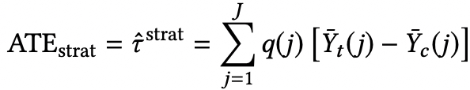

因果推断定义
因果推断Causal Inference是基于观察数据进行反事实估计，分析干预与结果之间的因果关系的一门学科。
痛点：传统的实验性研究（RCT）耗费人力物力，并且存在一些不可逾越的障碍。
厘清相关性和因果性的关系
在日常生活中经常将相关性和因果性混淆。但是，相关性和因果性有着本质的区别。
相关不代表因果（correlation does not imply causation）。
相关性：两个变量之间呈现一个变量随另一个变量的变化而表现出增加或者减少的趋势。
因果性：一个变量的因导致了另一个变量的果 。
eg.吃早餐的人比不吃早餐的人体重轻并不能推出吃早餐有助于减肥。而可能是吃早餐的人拥有更好的生活方式，这导致了他们有更轻的体重。在这种情况下，拥有更好的生活方式是吃早餐和体重减轻的共同原因，当然健康的生活方式也可以称为吃早餐和体重轻重之间因果关系的混淆因子。
现实生活中我们会遇到更多更加复杂的两种行为之间的关系，因此因果推断就显得非常必要。
探究因果关系最有效的方法就是进行随机对照试验(RCT randomized controlled trial)。将参与者随机分成对照组和实验组，控制变量来观测目标干预的效果。
缺点：
- 样本少，不具备足够的代表性
- RCT只关注样本的平均变化，不能解释个体的干预效果
- 道德问题，实际无法操作
因此，可以通过基于观察性数据来进行因果推断。观察性数据通过直接观察目标得出，没有对照也没有控制变量。因此，我们无法进行反事实结果的推断，而无法探究其因果关系。
现在，因果推断中两个主流的研究方案：
潜在结果框架potential outcome framework：预估不同干预下的潜在结果，以估计实际的干预结果。
结构因果模型structual causal model：通过构建因果图与结构方程来探究因果关系。
因果推断基础
在下面主要介绍潜在结果框架下的因果推断方法。
基本定义
单元（unit）。单元是干预效果研究中的最小研究对象。一个单元是处于特定时间点物体、公司、患者、个体、人群。在潜在结果框架下，不同时间点的单元是不同的，一个单元可以视作整个数据集的一个样本。
干预（treatment）。作用于单元上动作。
表示干预， 表示不同干预动作的数量。对于二元干预而言，这里 是干预组 ， 是控制组。
潜在结果（potential outcome）。对于每一个单元-干预对，对于干预作用在该单元所得到的结果称为潜在结果。将干预值为的潜在结果定义为。
观察结果（observed outcome）。指实际执行了干预所对应的结果。用表示。
反事实结果（Counterfactual outcome）。单元如果执行了另一种干预所得到的结果。用表示。
在观察数据中，除了执行的干预和观察结果，unit的其他信息也会被记录，这些信息被称为预干预变量和后干预变量。
预干预变量（pre-treatment variables）。指不会被干预影响的变量，也称为背景变量， 例如患者的疾病史。定义为预干预变量。
后干预变量（post-treatment variables）。指会被干预影响的变量。一个例子就是中间结果，例如药物试验中服药后的实验室检查结果。后续的变量指代后干预变量。
干预效果定义
接下来的说明以二元干预进行说明。
在人群层面的干预效果为**平均干预效果(Average treatment effect, ATE)**定义为：
和分别是整个人群的潜在干预结果和对照结果。
在干预组层面，干预效果被称为干预组的平均干预效果(Average treatment effect on the treated group, ATT)，定义为：
和分别表示干预组的潜在干预结果与对照组结果。同理，在对照组的平均干预效果被称为ATC。
在亚组层面，干预效果被称为条件平均干预效果(conditional average treatment effect, CATE)，定义为：
和表示在预干预变量的亚组中的潜在干预结果与对照结果。
当干预效果在不同亚组中存在差异时，是一个常用的干预效果的评估方法。
在个体层面，干预效果被称为个体干预效果(Individual treatment effect, ITE)，单元$i $的ITE效果表示为：
在部分情况下可以将ITE与CATE视作等价。
因果推断的目标是从观察数据中估计干预的效果。对于给定的数据集 ，估计上述定义的各项干预效果。
结合一个案例进行讲解：
在一个医疗场景中，我们想要评估不同药物对某种疾病的疗效。
获得的观察性数据：若干患者的电子健康记录（包括人口统计学信息，患者铎服用的具体药物与具体剂量，相关检查检验的结果）。从数据中我们只能观察到特定患者的特定事实结果。
目标：预测对某一患者执行其他干预动作所获得的效果。（即反事实结果）
为了解决上述问题，常用三个假设：
- 稳定单元干预假设：任意单元的潜在结果都不会受到其他单元干预的影响。
- 可忽略性假设： 给定背景变量，干预的分配独立于潜在结果，对背景变量相同的单元其干预分配可以视为随机的。即无论潜在结果如何，这两名患者的干预分配策略也会是相同的。
- 正值假设：对于任意的，干预分配都是不确定的。
由此可以得到如下公式：
基于上面的等式可以得到下面在不同层面干预效果的公式：

上述公式都转换成了基于不同组别的ITE的均值。
由于我们无法同时观察到一个单元的潜在干预结果与对照结果，因此，干预效果的估计关键在于如何估计ITE的反事实结果。
混杂因子的影响和处理方式
混杂因子(Confounders)：混杂因子是会同时影响干预分配以及结果的变量。
因果推断的核心是估计在一个特定的组别上的平均潜在干预结果与对照结果，以ATE为例：
和分别是干预组合对照组的单元数量。
由于混杂因子的原因，上述的估计方式存在严重的误差，甚至会包含虚假的因果效应。
混杂因子是一些特殊的预干预变量（即背景变量），当直接计算观测到的干预与对照结果的平均值时，所得出的 不仅包括了干预对结果的影响，还包括了混杂因子对结果的影响，从而导致了伪效的出现。在上面的例子中，患者年龄就是一个混杂因子。年龄影响着康复率：一般来说，年轻患者要比老年患者恢复地更好；年龄同时还影响着干预的选择：年轻的患者可能趋向于使用药物 A 而老年患者趋向于使用药物 B，或者年轻患者使用药物的剂量与老年患者存在差异。下表给出了对应的观察性数据：
ATE = 289/350 - 273/350 = 5%
辛普森悖论
除了对干预效果估计带来伪效应，混杂因子还会导致选择偏差(selection bias)：观察到组别中的分布并不能代表我们感兴趣的组别。
基于假设的因果推断方法
基于之前的三个假设，针对混杂因子的处理方法可以分为如下几种方法：
重加权法(re-weighting methods)
由于干预组和对照组中的协变量(混杂因子也是协变量的一种，而协变量是背景变量的一种)的分布是不同的，这会导致选择偏差的出现，即干预的分配与观察数据中的协变量相关。通过对样本重加权来解决干预选择的偏差。创建出一个干预组与对照组分布类似的拟群。
倾向性评分：在给定背景变量时分配到特定干预的条件概率
基于倾向评分的样本重加权
逆倾向加权(IPW)为每个样本分配一个权重r：
加权后ATE：
将上式子进行归一化后的结果：
在大样本和小样本的场景中，通过倾向性重加权的方式都可以很好地平衡协变量所带来的选择偏差。
但是，IPW估计器的正确性高度依赖于倾向性评分估计的正确性，倾向评分的轻微的错误会导致ATE出现较大的偏差。
可以通过改善IPW估计器的方法来提升倾向评分估计的正确性。
混杂因子平衡
对于样本重加权方法来说，其中所有的观察变量都被视为混杂因子，然而实际上并不是所有的观察变量都是混杂因子，其中一些变量被称为调整变量，只是对结果的预测，而其他一些变量可能是无关变量。通过对调整变量进行调整，虽然不能减少偏差，但有助于减少方差。而包含不相关的变量会导致过拟合。
下面一个例子展示了关于混杂因子与调整变量的区别：
为了区分混杂因子与调整变量的不同影响，同时消除无关变量，可以采用的一种**数据驱动的可变性分解(Data-Driven Variable Decomposition)**算法，是调整变量
为了求解，需要基于观察变量对进行回归分析。该分析的目标函数是与所有观察变量的线性回归函数的损失，以及用于区分混杂因子、调整变量与无关变量的稀疏正则项，这里还是需要人工进行区分。但是，实际中观察样本通常缺少关于观察变量的先验知识，同时数据通常是高维且包含噪声的。
分层方法(stratification methods)
顾名思义即将整个组划分成同质性的亚组来调整干预组和对照组之间的偏差。在理想情况下，在每个亚组中，干预组和对照组的协变量的分布是类似的，因此来自相同亚组的单元可以近似看成是从随机对照实验数据中进行采样获取的。基于每个亚组的同质性假设条件，可以通过计算RCT的方式计算ATE：
和分别表示第组中干预效果与对照效果的平均值，表示将组单元占全部单元数的比例。
分层，创建不同分组的方法：
- 等频率法(如利用倾向性评分进行分组)，使得每个分组的协变量的概率分布相近。
- 原则分层，基于后干预变量的潜在结果进行分组
基于树的方法(tree-based methods)
另一种流行的因果推理方法是基于决策树学习，它是预测建模方法之一。决策树是一种用于分类和回归的非参数监督学习方法。目标是创建一个模型，通过学习从数据中推断的简单决策规则来预测目标变量的值。
目标变量是离散值的的树模型称为分类树，其预测误差是根据误分类损失值来度量的。在这些树结构中，叶子代表类标签，而分支代表导致这些类标签的特性的组合。
目标变量连续的决策树称为回归树，其预测误差由观测值与预测值的平方差来衡量。在分类与回归树(CART)模型中，对数据空间进行分区，并对每个分区空间拟合一个简单的预测模型，因此每个分区都可以图形化地表示为一棵决策树。
元学习方法(meta-learning methods)
在对条件干预效果进行估算时，应该考虑两个关键问题：
- 控制混杂因子，消除混杂因子与结果之间的伪关联性和选择偏差
- 给出计算CATE的公式
前面的方法都是同时去解决这两个问题，而基于元学习的算法则会将上述两部分拆开实现：
- 估计条件平均结果，该步骤得到预测模型为基学习器。
- 基于第一步中结果的差异推导出CATE估计器。
常见元学习算法包括S-Learner、T-Learner、X-Learner、R-Learner等。
S-Learner：将干预分配视为一个特征，采用单个机器学习模型来评估干预效果。
估计平均结果
CATE的评估结果表示为：
T-Learner：采用机器学习模型分别拟合 和，即干预组和对照组采用两个模型来表示：
和，即干预组和对照组采用两个模型来表示：
CATE的评估结果表示为：
X-Learner：在T-Learner的基础上的延拓。解决treatment组合control组数据量差异过大导致表现不佳的问题。
包括三个步骤：
**步骤1** 对treatment和control组数据分别训练预测模型，构建平均结果估计<img src="attachment:4adcaa337e01fc8fa3be18bf50a07e1c" alt="截图" style="zoom:50%;" />和<img src="attachment:efa6e0407f14ef9f2745df03939dfe00" alt="截图" style="zoom:50%;" />：
<img src="attachment:17973dcba3d13fa6dd3d318d1628f6d3" alt="截图" style="zoom:50%;" />
**步骤2** 计算一组uplift的近似表示的数据集，用treatment组模型预测control组数据，control组模型预测treatment组数据，分别做与Y的差值得到增量的估计。
X-Learner计算观测结果与估计结果之间的差值，将其作为干预效果。
和表示单元在干预组和对照组中的预估差异值：
计算出差异后，将数据集转变成包含D的两组：干预组对照组干预组数据集。基于上述两个数据集再训练两个预测模型：
**步骤3** 加权计算得出CATE表达式
R-Learner：通过Robinson变换重新设计损失函数。
变换过程：
首先将观测结果重写为：
其中
是对照组的基学习器，是CATE估计器，且（基于可忽略性假设）。
CATE被重写为：
其中是训练完成的倾向评分估计器(基学习器)。Robinson变换通过将上面两式相减得到：
为了获得最佳的CATE估计器，应当最小化和之间的差值。
目标函数：
demo：阿里文娱智能营销(uplift model)
目标：找出对营销敏感的人群。
下图展现了对人群进行营销反馈的划分：